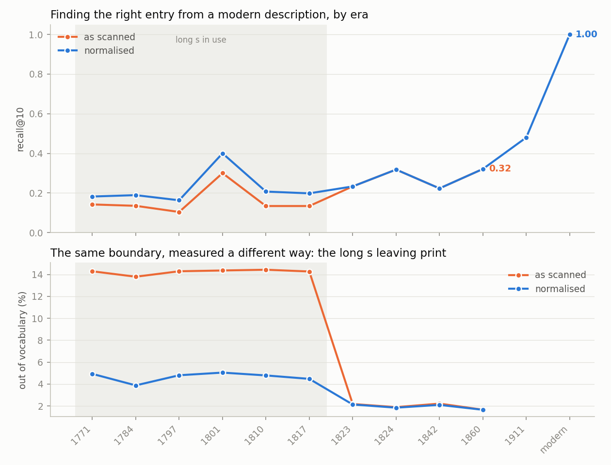
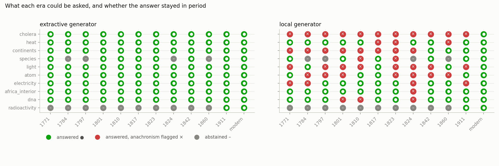
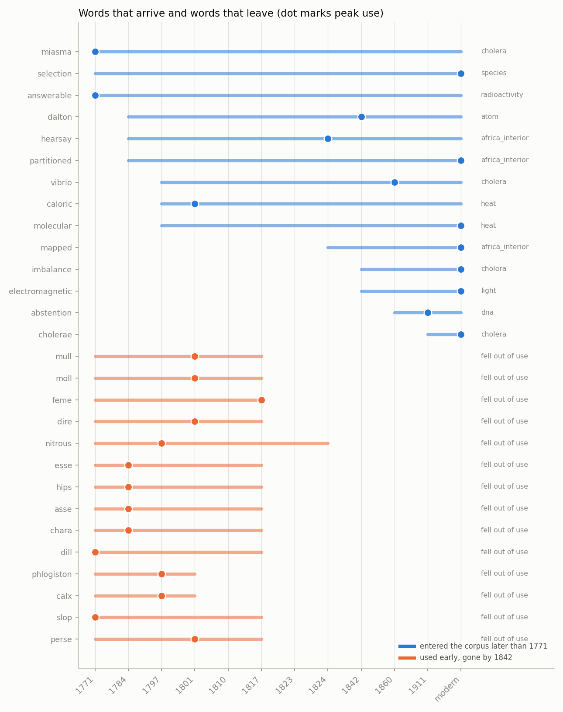

One question asked of twelve encyclopaedias, 1771 to now, each answering only from what it contains.



| era | answer |
|---|---|
| 1771 | "When an eruptive matter is repelled and causes this disease, ufe emulsions of the greater cold feeds, with temperate bezoardic powder;" [1771:144133903:208] "But as there are more causes than one that produce an inflammation, they will require different remedies to bring about a cure." [1771:144850368:222] "V
CHOLERA morbus, in medicine." [1771:144133902:729] 1771:144133903:208 1771:144850368:222 1771:144133902:729 |
| 1784 | "Sometimes they seem to depend on a certain delicacy or irritability of the nervous system, which is framed with such exquisite sensibility as to be strongly affefted by the slightest causes." [1784:144850377:1102] "but the cholera is often without any dysenteric symptoms, and copious difeharges of bile have been found to relieve the symptoms of dysentery:" [1784:144850377:1087] "In the cholera morbus it alleviates the violent tormina, checks the purging and vomiting, corrects the putrid tendency of the bile," [1784:144850374:1304] 1784:144850377:1102 1784:144850377:1087 1784:144850374:1304 |
| 1797 | "In the cholera morbus it alleviates the violent tormina, checks the purging and vomiting, corredts the putrid tendency of the bile, quiets the inordinate motions of the bowels, and fpecdily recruits thei exhausted lirength" [1797:149979156:350] "and are not unfrequent}y symptomatic, in fevers, the cholera morbus, &c." [1797:149983206:214] 1797:149979156:350 1797:149983206:214 |
| 1801 | "Our objeift, therefore, in this ’ supplementary article, will be to bring into one point of view the physical science which may be derived from the consideration of the celestial motions \ that is, to deduce from the general laws of those motions the inferences with refpecft to their supposed causes, which constitute the philosophy of the astronomer." [1801:191253809:35] "that is, to deduce from the general laws of those motions the inferences with refpeft to their supposed causes, which constitute the philosophy of the astronomer." [1801:191253807:26] "Fhele differences are easily examined by the deviations which it causes in the mariner’s needle from the magnetic meridian, and by its attr 1801:191253809:35 1801:191253807:26 1801:191253810:65 |
| 1810 | "In the cholera morbus it alleviates the violent tormina, checks the purging and vomiting, corredls the putrid tendency of the bile, quiets the inordinate motions of the bowels, and speedily" [1810:192547776:521] "At the first attack «>f tsie fever, the woman is generally seized with a vomiting of porraceous matter, as in the cholera morbus, ,." [1810:191678903:36] "CHOLERA morbus, a sudden eruption or overflowing of the bile or bilious matters both upwards and downwards." [1810:192547776:45] 1810:192547776:521 1810:191678903:36 1810:192547776:45 |
| 1817 | "If we examine this fever attentively, however, according to its natural course, and independently of all the accidental concomitant symptoms with which it is not essentially connedled, we may safely pronounce it to be a primary difeaie of a particular nature, and perhaps not the necefiary consequence of any of the causes above mentioned This fever is most generally incident to women within 48 hours after delivery, though it may supervene on the fourth or fifth day, and sometimes considerably mter." [1817:192200898:460] "In the cholera morbus it alleviates the violent tormina^ checks the purging and vomiting, corrects the putrid tendency of the bile, quiets the inordinate motions of" [1817:1 1817:192200898:460 1817:192984255:516 1817:192200898:413 |
| 1823 | "If we examine this fever attentively, however, according to its natural course, and independently of all the accidental concomitant symptoms with which it is not essentially connected, wre may safely pronounce it to be a primary disease of a particular nature, and perhaps not the necessary consequence of any of the causes above mentioned." [1823:192200323:453] "In the cholera morbus it alleviates the violent tormina, checks the purging and vomiting, corrects the putrid tendency of the bile, quiets the inordinate motions of" [1823:192200322:553] "These partial convulsions may attack almost any part ol the body", and are not unfrequently symptomatic, in levers, the cholera morbus, &c." [1823: 1823:192200323:453 1823:192200322:553 1823:192200323:406 |
| 1824 | "Malebranche, however, has treated the same argument much more profoundly and ably than any of his predecessors, and has, indeed, anticipated Hume in some of the most ingenious reasonings contained in his Essay on Necessary Connexion From these data, it was not unnatural for his pious mind to conclude, that what are commonly called second causes have no existence ;" [1824:193057498:55] "That we are completely ignorant of the manner in which 'physical causes and effects are connected, and that all our knowledge concerning them amounts merely to a perception of constant conjunction, had been before remarked by Hobbes, and more fully shown by Glan-ville in his Scepsis Scientjjica." [1824:192547 1824:193057498:55 1824:192547790:11 1824:193108320:50 |
| 1842 | "sometimes of an unceasing We have mentioned hysteria as another of those sta e Hystf • vomiting, of a griping diarrhoea, of cholera morbus, of co- of the general constitution that are liable to give rise o lie, of periodical hemicrania, of apoplexy, syncope, rheuma- groups or trains of symptoms closely resembling those tism, of universal spasm, pleurisy, peripneumony, pleuro- which are in wont" [1842:193469091:785] "There are also instances where it produced epilepsy, jaundice, cholera morbus, diarrhoea, &c." [1842:193057500:174] "In 1830 the inhabitants suffered severely from the cholera morbus." [1842:193057500:1127] 1842:193469091:785 1842:193057500:174 1842:193057500:1127 |
| 1860 | "The causes of death in each year are returned in detailed tables and discussed by Dr Farr, who has also, in occasional papers which have appeared in the reports, treated of the" [1860:193108326:980] "CHOLERA, usually supposed to be derived from the two Greek words x°^-V ant^ Pew> bile flux, but more probably from the Greek word ^oAcpa, a rain-gutter, when the affix of the word morbus showed it was the disease which was spoken of, and not the channel for water." [1860:193109113:1235] "In the bilious cholera, which prevails to a greater or less extent every autumn, violent vomiting and purging occur, but the discharges contain a large quantity of bilious matter." [1860:193109113:1235] 1860:193108326:980 1860:193109113:1235 |
| 1911 | "s possible all his cholera patients, and then to get rid of all
predisposing causes in the patients themselves, causes which
have already been indicated in connexion with the aetiology
of the disease." [1911:Parasitic Diseases] "Haffkine, working on
the assumption that the symptoms of cholera are produced by a
toxin formed by the cholera organism, came to the conclusion
that, by introducing first a modified and then a more virulent
poison directly into the tissues under the skin, and not into the
alimentary canal, it would be possible to obtain a certain insusceptibility
to the action of this poison." [1911:Parasitic Diseases] "This reaction, in its practical applications at least, may be r 1911:Parasitic Diseases 1911:Blood |
| modern | "Seventeen French and two English physicians, the English ambassador, and roughly 100 other onlookers observed the autopsy, and though the official report stated "death from cholera morbus (gastroenteritis) caused by heated bile," many" [modern:Henrietta of England] "Any potential for recovery was overwhelmed by his doctors, who treated him with "ipecac, calomel, opium, and quinine" at 40 grains per dose (approximately 2.6 grams), and "bled and blistered him too." A 2010 review concludes:" [modern:Zachary Taylor] "He also gave first European descriptions of other diseases.) But at the time, the word "cholera" was historically used by European physicians to refer to any gastrointestinal upset modern:Henrietta of England modern:Zachary Taylor modern:Cholera |
| era | answer |
|---|---|
| 1771 | "When a more considerable degree of heat is required, a bath is prepared of any solid matter reduced to a fine powder, such as fand, allies, filings of iron, i6v.The heat of these baths may be pushed fo far as to make the-bottom of the vessel become faintly red." [1771:144133902:652] "By plunging a thermometer into the bath, by the fide of the vessel, it is easy to observe the precise degree of heat applied to the substance on which you are working." [1771:144133902:652] "Hence it follows, that what we call heat is a particular idea or modification of our own mind, and not any thing exifling in that form in the body that occasions it." [1771:144850367:3815] 1771:144133902:652 1771:144850367:3815 |
| 1784 | "For further proofs of this opinion, which is now adopted by some very eminent philosophers, fee the articles Fire and Heat.—This being once admitted, the source from whence the eleftric fluid is derived into the earth and atmosphere, muft be exceedingly evident, being no other than the fun himself." [1784:144850375:770] "The very great readiness which this fluid (hews to be converted into aXual fire, fo as even to fuse metals, may also be reckoned a kind of demonstration of the facility wherewith the sensible heat of any body may become latent, or the latent heat sensible." [1784:144850375:1082] "What is called the quantity of heat contained in any substance, if we would speak with the ftri 1784:144850375:770 1784:144850375:1082 1784:144850376:666 |
| 1797 | "From the most ac* heat, and curate investigations, it appears, that caloric, or the liow this principle of heat, is a diftinft substance in nature} J3 Pro’that it combines with different bodies in different degrees ;" [1797:192200061:448] "Aerirorm bodies being ail therefore exceedingly Refpiraflmd, it muft be evident, that when they are fixed or tioncondenfed in the blood, and made to approach nearer l" solidity, a quantity of heat muft be evolved." [1797:192200061:448] "65 The gradual evolution of heat is a proof that the And its na temperature muft be sometimes reduced before the oxy~tural coolgene can properly enter into" [1797:192200061:449] 1797:192200061:448 1797:192200061:449 |
| 1801 | "It was not long before it was observed that it also affords us measures of the changes which take place either in the quantity or the adlivity of the cause of heat, and of many other important phenomena usually accompanied by heat." [1801:191253808:351] "But in both of these offices, it is still a doubt whether it indicates and measures any real substance, a being fui generis, to which we may give the name fire, phlogiflon, caloric, heat, or any other ;" [1801:191253808:351] "and was prized by the naturalist, because it gave him indications of the ■orefence and agency of fire in many cases where our sensation of warmth or heat was unable to difeover it." [1801:191253808:351] 1801:191253808:351 |
| 1810 | "We are aware that this reasoning will not satisfy those philosophers who deny the materiality of caloric and light j we know that much ilrefs is laid on the experiments of Count Rumford, as completely subversive of the materiality of heat, experiments that could even dagger the opinion of a Robison." [1810:192692190:164] "When heat is applied to the mixture, the sulphur melts, and therefore combines with a great quantity of caloric $ but, when the sulphur combines with the copper, it returns to the solid state, and therefore gives out a quantity of caloric." [1810:191320557:124] "When we fay that wre feel heat, it1 muft mean the sensation of heat excited in the body j but when w-e fay that 1810:192692190:164 1810:191320557:124 1810:191320557:63 |
| 1817 | "When the bodies rubbed are combustible, as two pieces of dry wood, they may be inflamed •, but when they possess combuflibility in a low degree, or are altogether incombustible, the temperature may be railed fo high as to communicate a degree of heat sufficient to let fire to corabuilible bodies." [1817:192984254:1142] "To prevent any ambiguity in the ufe of these terms, the word caloric has been adopted in the new chemical n®menclature, to signify that state or condition of matter by which it excites in us the sensation of heat j and in this sense it is now to be employed." [1817:192984254:1129] "The nature and effefls of caloric or heat are highly interesting, as curious fubjefts of specu 1817:192984254:1142 1817:192984254:1129 |
| 1823 | "But if this change took place in the lungs, and all the latent heat of the air inspired was extricated in these organs, it was urged as an objection to this theory, that the temperature in them would be much higher than in other parts of the body." [1823:192692756:1356] "Part of the latent heat of the air, which was inspired and combined with the blood, is given out, and thus raises the temperature of the blood, and that of the whole body through which it circulates." [1823:192692756:1356] "In some cases, however, by the collision of very hard stony bodies, which are bad conductors of heat, there may be an actual ignition of the particles." [1823:192692756:1217] 1823:192692756:1356 1823:192692756:1217 |
| 1824 | "_ » , , Since, then, neither the operation of heat and moisture, nor the loss of carbon, will account for the changes that occur in the germinating seed, and since all the oxygen lost by the air exists m the carbonic gas that is formed, we must look for an explanation of the uses of the air, not to its ponderable elements, but to the action of that caloric which is extricated whensoever its oxygenous portion is converted into carbonic acid gas." [1824:192693396:439] "Since, then, neither the operation of heat and moisture, nor the loss of carbon, will account for the changes that occur in the germinating seed, and since all the oxygen lost by the air exists in the carbonic gas that is forme 1824:192693396:439 1824:192547787:433 1824:193109112:333 |
| 1842 | "but that it is intercepted by a plate of glass interposed between the mirror and the fire.” The next important step was made by Lambert, who discovered that the heat might be so increased, by employing two concave mirrors, and a charcoal fire placed in the focus" [1842:193638940:386] "and although the same heat that produced the ebullition V be still continually applied, and although we know that this heat must be continually entering into the water, still it is not detected, or in any way exhibited by the thermometer." [1842:193913444:942] "This extrication of heat takes place in vacuo as well as in the air, and appears to be owing to the compression employed forcing the particles of the s 1842:193638940:386 1842:193913444:942 1842:193638940:400 |
| 1860 | "we continue the fire with the same intensity that was used in bringing it to boil, it will require more than fivefold that duration and quantity of fuel to boil all the water away, or convert it all into steam of 212° of heat." [1860:193469393:740] "and in air, though much of its caloric apparently passes off with the ascending currents which it produces in the ambient air, the emanations of heat also pass off in directions contrary to these aerial currents." [1860:193469392:488] "This process evidently diminishes the capacity of the iron for heat, its specific gravity becomes greater, and the loss of its latent heat renders it still and brittle." [1860:193469392:497] 1860:193469393:740 1860:193469392:488 1860:193469392:497 |
| 1911 | "hypothesis do not agree with the accepted interpretation of facts, the hypothesis may need modification, it may have to be abandoned altogether, or the want of concordance may point to some error or inconsistency in the fundamental concepts on which the hypothesis is based—the whole framework of that branch of science may need revision, as the idea of heat as a caloric substance had to be abandoned under the pressure of the experiments of Joule on the equivalence between work done and heat developed." [1911:Science] "He remarks that “the law
according to which the motive power of heat varies at different
points of the thermometric scale is intimately connected with that
of the variations of 1911:Science 1911:Thermodynamics 1911:Energetics |
| modern | "Surprisingly, Thomson did not send Joule a copy of his paper, but when Joule eventually read it he wrote to Thomson on 6 October, claiming that his studies had demonstrated conversion of heat into work but that he was planning further experiments." [modern:Lord Kelvin] "Lavoisier's prestige and the practical success of Sadi Carnot's caloric theory of the heat engine since 1824 ensured that the young Joule, working outside either academia or the engineering profession, had a difficult road ahead." [modern:James Prescott Joule] "The conversion of heat (or caloric) into mechanical effect is probably impossible, certainly undiscovered—But a footnote signalled his first doubts about the caloric modern:Lord Kelvin modern:James Prescott Joule |
| era | answer |
|---|---|
| 1771 | "serving to support fafeines to cover the pioniers.CHANNEL, in geography, an arm of the fea, or a narrow fea between two continents, or between a continent and an island." [1771:144133902:591] "OCEAN, in geography, that vafl colleftion of fait and navigable waters, in which the two continents, the firfl including Europe, Alia, and Africa, and the lafl:" [1771:144850368:953] "CHANNEL, in geography, an arm of the fea, or a narrow fea between two continents, or between a continent and an ifiand." [1771:144850367:601] 1771:144133902:591 1771:144850368:953 1771:144850367:601 |
| 1784 | "6 We are now led into a discussion of the philosophi- Discussion i cal question concerning the reason why cold predomi- the que* nates more in large continents than in islands;" [1784:144850370:1013] "and it now appears, that the continents of Asia and America are separated from one another but by a narrow strait, which is free from ice ;" [1784:190273289:10] "determine this question in the common way, namely, ^ colder 1 that the vicinity of the fea keeps the cold from becoming than iflandst fo" [1784:144850370:1013] 1784:144850370:1013 1784:190273289:10 |
| 1797 | "That the feas in the present earth are vaflly more extended, and consequently the dry land fo much less in proportion, may likewise be infewed from the great multitude of islands that lie near the shores of the greater continents, if it be true what some allege, that they are parts broken off by the deluge from the main land, which before that reached to and beyond them." [1797:149979156:1326] "that as there are different forts of fiflies in the different feas of the world, fo the exuviae of the fame kind are generally found upon contiguous lands, does not always hold, since there are some (hells found in the continent which are flrangers to the parts of the fea conterminous to these contin 1797:149979156:1326 1797:191253822:1363 |
| 1801 | "in other countries the volcanic force muft be of power to blow up the mountains, and to convulfe the continents that held k WAS down, before it could tfcape from the deep caverns in which it was imprisoned :" [1801:191253808:402] "petals four, fmaH, entice, egg shaped, fixed*Upon the receptacle." [1801:191253807:290] 1801:191253808:402 1801:191253807:290 |
| 1810 | "But the northern shores of the Mediterranean, the kingdom of Portugal, and some other places without the tropics, have been oftener the scene of desolation, by tne effefts of the earthquake, than many of the islands and extenflve continents within the torrid zone, from this circumstance in the history of earthquakes, it would appear that they are not limited to particular regions, on account of proximity to the equator or distance from it, on account of insular fltuation or extent of continent." [1810:193109111:164] "and it now appears, that the continents of Alia and America are separated from one another but by a narrow strait, which is free from ice 5 but, to the northwards, that experie 1810:193109111:164 1810:191320559:30 1810:192545783:1 |
| 1817 | "Authentic biftory scarcely affords an instance of an island formed by the breaking off a piece from the continent, though it does many of islands being joined to continents by some one or other of the causes just mentioned." [1817:191678897:401] "These vol-canoes have burnt when the land on which they are railed was under the waters of the ancient fea, and none of them have burnt flnee our continents became dry." [1817:193109108:549] "while not a few of those near the great continents owe their origin to the quantities of mud brought down by the great rivers which empty themselves into the ocean." [1817:191678897:401] 1817:191678897:401 1817:193109108:549 |
| 1823 | "kingdoms and continents are larger masses of its broken substance j and all the inequalities that are to be found on the surface of the present earth, are owing to the accidental confusion into which both earth and waters were then thrown." [1823:192547782:582] "because we know that it must sail down between the continents of Asia and America, through that strait whose mouth must often be blocked up with ice driving eastward along the continent of Asia." [1823:192547784:35] "However, though it should be allowed that the sea is quite clear all the way to the pole, it must be a very great uncertainty whether any ship could by that way reach the East Indies;" [1823:192547784:35] 1823:192547782:582 1823:192547784:35 |
| 1824 | "The isthmus which connects the two American continents consists of a prolongation of the chain of the Andes, of moderate height, and which, about the latitude of 18° north, spreads out into a vast plateau of table land, about 7000 feet above the sea." [1824:192547787:106] "and he is universally allowed to have had great success in removing the specious objections which had been advanced by his antagonists, against the comparatively recent formation of the present continents." [1824:192547786:249] "14>.) A comparison of the great continents of the Old and New World shows that the advantages are" [1824:192547787:106] 1824:192547787:106 1824:192547786:249 |
| 1842 | "And if we admit, on the ground of their similarity of organization, that the greater number of the American languages have had a common origin, even in those cases where coincident terms are no longer to be discovered, perhaps it ought to be acknowledged that the affinity between the languages of the two continents is as great as could be expected." [1842:192984259:1526] "It is principally intended as a refutation of the ^Ucain Vulcanian system of Hutton and Playfair, who deduced the '^v> changes of the earth’s structure from the operation of fire, and attributed a higher antiquity to the present state of the continents than is required in the Neptunian system adopted by Deluc after Dolomie 1842:192984259:1526 1842:193108323:912 |
| 1860 | "And if we admit, on the ground of their similarity of organization, that the greater number of the American languages have had a common origin, even in those cases where coincident terms are no longer to be discovered, perhaps it ought to be acknowledged that the affinity between the languages of the two continents is as great as could be expected." [1860:193322698:1531] "we still hesitated to believe such motion in the solid frame-work of the earth possible, our scepticism must at length give way before the knowledge of the fact that it is still going on even in our own day in various parts of the earth." [1860:193592632:130] "but it is not entirely to be disregarded when taken in connecti 1860:193322698:1531 1860:193592632:130 |
| 1911 | "Part IV.—Dynamical Geology
This section of the science includes the investigation of those
processes of change which are at present in progress upon the
earth, whereby modifications are made on the structure and
composition of the crust, on the relations between the interior
and the surface, as shown by volcanoes, earthquakes and other
terrestrial disturbances, on the distribution of oceans and
continents, on the outlines of the land, on the form and depth
of the sea-bottom, on climate, and on the races of plants and
animals by which the earth is tenanted." [1911:Geology] "Geology has, however, taught us that many parts of what are now continents formed at earlier periods of the earth's his 1911:Geology 1911:Zoological Distribution 1911:Continent |
| modern | "The northern plain contains the old geological continent of Baltica and so may be regarded geologically as the "main continent", while peripheral highlands and mountainous regions in the south and west constitute fragments from various other geological continents." [modern:Europe] "The geological continents correspond to seven large areas of continental crust that are found on the tectonic plates, but exclude small continental fragments such as Madagascar that are generally referred to as microcontinents." [modern:Continent] "Precambrian supercontinents
The movement of Earth's plates has caused the formation and break-up of continents over time, including occasional formation of a supercont modern:Europe modern:Continent modern:Precambrian |
| era | answer |
|---|---|
| 1771 | "POLYPUS, in zoology, a species of the hydra, which, although cut in a thousand pieces, and in every diredtion, dill exids, and each fedtion becomes a cpmpleat animal." [1771:144133903:1830] "for, according to Briffonius, Bouffon, and most other natural historians, none of the species of this genus have four moveable belts." [1771:144133902:1709] "ANATIFERA concha, the trivial name of a species of thelepas, a teftaceous animal." [1771:144850366:1451] 1771:144133903:1830 1771:144133902:1709 1771:144850366:1451 |
| 1784 | no entry in this edition answers it |
| 1797 | no entry in this edition answers it |
| 1801 | "but since that article was written, we have met with an account of a new species, fo veryr singular, that, if the veracity of our author can be depended on, it is well intitled to a place here." [1801:191253807:40] "but iince that article was written, we have met with an account of a new species, fo very Angular, that, if the veraci y of our author can be depended on, it is well mtitled to a place here." [1801:191253809:52] "This species was difeovered in the country of the iNimiquas, in the interior of Afiica, by M." [1801:191253807:40] 1801:191253807:40 1801:191253809:52 |
| 1810 | "We (hall divide the sequel of this article into two chapters, the fidt of which will contain a general view of the classification of the genera, and in the second will be given the classification and natural hidory of the species." [1810:192692192:593] "This refledled margin never appears in land {hells, but when they have reached the last period of their growth, and when it is once formed, the animal of some species ceases afterwards to continue the convolutions of its spire." [1810:192547777:4] "' This species is extremely voracious, seizing, it is laid, on young birds of different kinds, mice, and even ducklings, and, as it does with the rest of its prey, swallowing them whole." [1810:19 1810:192692192:593 1810:192547777:4 1810:191320560:344 |
| 1817 | "This species, it is observed by naturalists, does not N n leave lS2 Frogs." [1817:191678898:347] 1817:191678898:347 |
| 1823 | "it is once formed, the animal of some species ceases afterwards to continue the convolutions of its spire, siitue Having now arrived at that period of its growth, when sarts it is fit to perform the act of generation, it protrudes ^le^s> }• itself more frequently from its shell, and each time it 'r' returns, a viscid fluid which exudes from its neck, is interrupted and deposited on the external margin" [1823:192200322:747] "This species is extremely voracious, seizing, it is said, on young birds of different kinds, mice, and even ducklings, and, as it does with the rest of its prey, swallowing them whole." [1823:192015836:453] "These constituents are, hydrogen, azote, carbon, and oxygen, wi 1823:192200322:747 1823:192015836:453 1823:192692756:1358 |
| 1824 | no entry in this edition answers it |
| 1842 | "In different species they differ in this respect as much from one another as they do from monocotyledonous seeds." [1842:193057500:86] "Even in the same species inhabiting a changeable climate, nature adapts their covering to the season." [1842:193638940:386] 1842:193057500:86 1842:193638940:386 |
| 1860 | no entry in this edition answers it |
| 1911 | "In the Puerco, or Lowest Eocene of North America the place
of the above species was taken by Euprotogonia puercensis, an
animal only half the size of Phenacodus primaevus, with the
terminal joints of the limbs intermediate between hoofs and
claws, and the first and fifth toes taking their full share in the
support of the weight of the body." [1911:Phenacodus] "With its liability to various kinds of mechanical and other damage, in a world beset with dangers amid which the individual and species have to win their way in the struggle for existence,
we may regard nocuous stimuli as part of a normal state of affairs." [1911:Spinal Cord] "§ 12), where he is arguing in favour of the
hypothesis, af 1911:Phenacodus 1911:Spinal Cord 1911:Evolution |
| modern | "The first suggestion that the human species was descended via the apes from the lower animals did not come until Lamarck's Philosophie Zoologique of 1809."
Charles Dickens knew of Monboddo and wrote in his novel, Life and Adventures of Martin Chuzzlewit about "(...) the Manboddo doctrine touching the probability of the human race having once been monkeys"." [modern:James Burnett, Lord Monboddo] "majority view then (and now) was that geographical separation is the primary force in species splitting (or allopatry) and secondarily was the increased sterility of crosses between incipient species." [modern:George Romanes] "By comparing humans with non-human animals and comparing animal species w modern:James Burnett, Lord Monboddo modern:George Romanes modern:Psychology |
| era | answer |
|---|---|
| 1771 | "ABERRATION, in optics, a deviation of the rays of light which prevents their uniting in the fame focal point, and is occasioned by their being refradted by a spherical lens, or reiledted by a spherical speculum." [1771:144133901:73] "The laws of refradtion, and the effefls which the refraftion of light has in vision, are the fubjedt of Dioptrics:" [1771:144133903:1109] "and everything is looked upon as a part of Optics which relates to the nature and qualities of light." [1771:144133903:1109] 1771:144133901:73 1771:144133903:1109 |
| 1784 | "Without inquiring any farther into the nature ofEucl.,<?’s light or vision, the ancient geometricians contentedtrealiie of themselves with deducing a system of optics from the two observations mentioned above, viz." [1784:144850378:1004] "I731 C A T O P CAtoptrics is that part of optics which explains the properties of reflefted light, and particularly that which is reflefted from mirrors." [1784:144850374:546] "It is observable, that when a person Hands in a place where there is a strong light, he cannot distinguish objefts that are placed in the (hade ;" [1784:144850379:15] 1784:144850378:1004 1784:144850374:546 1784:144850379:15 |
| 1797 | "INFLECTION, called also a dffradion, and dffecrtion, in optics, is a property of light, by reason of which, when it comes within a certain distance of any body, it will either be bent from it, or towards it ;" [1797:191320009:281] "in optics, is used to denote that error or deviation of the rays of light, when inflefted by a lens or speculum, whereby they are hindered from meeting or uniting in the fame point." [1797:190273291:90] "one arising from the figure of the glass or speculum, the other from the unequal refrangibility of the rays of light." [1797:190273291:90] 1797:191320009:281 1797:190273291:90 |
| 1801 | "require fuel, and that the light man is never cxpofed either to cold or to wet by attending to his duty, we muft be convinced that light-houses with refleitorsare much less liable to be negk&ed in stormy weather than those with open fires, and that this circumstance alone would be enough to give the former a preference, almost incalculable, over the latter." [1801:191253808:222] "This was fufpefted by David Rittenhouse *, but was first demonstrated by the ingenious experiments of Mr Brougham When light falls upon a visible body, fbrr.e of it is reflefted back ;" [1801:191253807:104] "We mention them here because they prove that light is added on by other bodies, that it is fubjedled to the 1801:191253808:222 1801:191253807:104 1801:191253809:120 |
| 1810 | "observations upon these angles, the moll rude and imperfeCt could not fail to convince them ot their equality, and'that the incident and reflected rays werem the lame PlTriftotle was sensible that it is the reflection of light from the atmosphere which prevents total darkness alter the fun lets, and hi places where he does not Ihme in the day time." [1810:191253836:401] "INFLECTION, called also a dffraBion, and deflection, in Optics, is a property of light, by reason of which, when it comes within a certain distance of any body, it will either be bent from it, or towards it j which is a kind of imperfeft refleftion or refraftion." [1810:191679019:389] "OPTICS, from in-TopM, to fee, is that 1810:191253836:401 1810:191679019:389 1810:191253836:396 |
| 1817 | "INFLECTION, called also d/firaBion, and defies tion, in Optics, is a property of light, by reason of which, when it comes within a certain distance of any body, it will either be bent from it, or towards it j which is a kind of imperfeft refleftion or refraftion." [1817:192547785:406] "If light be conceived as small particles of matter emitted from bodies by the aCfion of accelerating forces of any kind, the vast diversity which we observe in the constitution of sublunary bodies fliould" [1817:192200897:401] "Aristotle was sensible that it is the reflection of light from the atmosphere which prevents total darkness after the fun fets, and in places where he does not Ihine in the day-time." 1817:192547785:406 1817:192200897:401 1817:192200897:388 |
| 1823 | "INFLECTION, called also diffraction, and deflection, in Optics, is a property of light, by reason of which, when it comes within a certain distance of any body, it will either be bent from it, or towards it j which is a kind of imperfect reflection or refraction." [1823:192984257:437] "Aristotle rvas sensible that it is the reflection of light from the atmosphere which prevents total darkness after the sun sets, and in places where he does not shine in the day-time." [1823:192015837:388] "Every polished body that reflects the rays ofDcf'nit'011 light is called a mirror, whether its surface be plane, spherical, conical, cylindric, or of any other form whatever." [1823:192692756:809] 1823:192984257:437 1823:192015837:388 1823:192692756:809 |
| 1824 | "These are the only mathematical treatises on optics of any consideration which the ancients have transmitted to us j a but many metaphysical speculations on light and vision are to be found in the writings of the philosophers." [1824:193108319:12] "Theory, therefore, in this instance, is merely to be regarded as the expression of a general law, and in that light, I think, it is considered by La Place." [1824:193109112:10] "* but many metaphysical speculations on light and vision are to be found in the writings of the philosophers." [1824:192693395:15] 1824:193108319:12 1824:193109112:10 1824:192693395:15 |
| 1842 | "riate of silver , and a transparent body is one It belongs to the geometrical or mathematical part ofophcs, which transmits the light through it, such as glass, water, to assign the laws which regulate the change of direcbon 1c air The most Spaque body, however, may be made which light experiences when it is transmitted through, or transparent b^ making^ it sufficiently thin, and the most reflected from bodies, whose density » uniform, and whose SnsnSlnt one may become opaque by making it suffi- surfaces have a geometrical form;" [1842:194474782:651] "For greater convenience of observation I placed a small looking-glass without the window shutter in such a position as to reflect the suns li 1842:194474782:651 1842:194474782:709 |
| 1860 | "or an analogous phenomena may be seen by scattering hair-powder on the face of a common looking-glass.8 Sir David Brewster has remarked,6 that the method which he has found the most simple for exhibiting these colours, is to place the eye immediately behind a small flame, from a minute wick fed with oil or wax, so that we can examine 1 Sir John Herschel’s Treatise on Light, § 769, &c., in which the reader will find the subject more fully treated." [1860:193322699:813] "Thomas Young.—The TJndulatory Theory of Light.—Its history from the time of Hooke and Huygens.—The Law of Interference.—Its application to Diffraction—to the Rainbow —and to other subjects.—The Theory of Polarization referred 1860:193322699:813 1860:192984260:147 1860:193322699:731 |
| 1911 | "The “dielectric constant” of a medium
is its specific inductive capacity, and on the electromagnetic
theory of light it equals the square of its refractive index for light
of infinite wave length (see Electrostatics;" [1911:Dielectric] "Greek terminology included two adjectival forms—τὰ ὀπτικά,
for all optical phenomena, including vision and the nature of
light, and ἡ ὀπτική (sc." [1911:Optics] "α-, privative, χρῶμα, colour), in optics, the property of transmitting white light, without decomposing it into the colours of the spectrum;" [1911:Achromatism] 1911:Dielectric 1911:Optics 1911:Achromatism |
| modern | "Branch of physics that studies light
the book by Sir Isaac Newton
Branches
Optics is the branch of physics that studies the behaviour, manipulation, and detection of electromagnetic radiation, including its interactions with matter and instruments that use or detect it." [modern:Optics] "In comparison with lower frequencies such as microwaves, the amount of angular momentum in light, even of pure circular polarization, compared to the same wave's linear momentum (or radiation pressure) is very small and difficult to even measure." [modern:Polarization (waves)] "Priestley published the first volume of his projected history of experimental philosophy, The History and Present State of Discover modern:Optics modern:Polarization (waves) modern:Joseph Priestley |
| era | answer |
|---|---|
| 1771 | "ATOM, in philosophy, a particle of matter, fo minute as to admit of no division." [1771:144133901:2389] "Thus, suppose an atom existing in a determined time and place;" [1771:144133903:403] 1771:144133901:2389 1771:144133903:403 |
| 1784 | "CORPUSCLE, in physics, a minute particle, or physical atom, being such as a natural body is made up of." [1784:144850374:1654] "ATOM, in philosophy, a particle of matter, fo minute, as to admit of no division." [1784:144850373:101] "Thus, suppose an atom existing in a determined time and place ;" [1784:144850378:115] 1784:144850374:1654 1784:144850373:101 1784:144850378:115 |
| 1797 | "and has (hown, that if we suppose an ultimate atom of matter endowed with powers of attraction and repulsion, varying, both in kind and degree, with the distance, and if this force be the fame in every atom, it may be regulated by such a relation to the distance from the neighbouring atom, that a collection of such atoms may have all the sensible appearances of bodies in their different forms of solids, liquids, and vapours, elastic or unelaftic, and endowed with all" [1797:191253817:1] "2t//j, It mail also in some other refpeCl be at rest, for otherwise it could not form an inactive atom, jc'/y, It muft preserve unity within itself.” The author’s proof of the first of these positions we ha 1797:191253817:1 1797:191253824:8 1797:191253799:11 |
| 1801 | "If we grant the reality of attractions and repulsions e dijianti, and suppose that every primary atom of matter is precisely similar to every other atom .in all its properties, and that this assemblage of properties conttitutes it a material atom;" [1801:191253807:325] "Moreover, had matter been in motion from all eternity, every atom would have deferibed an infinite line, and then a part ot that line would be assignable at an infinite distance from the point of space in which the atom is at present:" [1801:191253807:47] "It will equally explain all the phenomena, if we suppose that every particle contains an atom or ingredient having this property, and that it is this atom alone which attr 1801:191253807:325 1801:191253807:47 1801:191253809:224 |
| 1810 | "and has shown, that if we suppose an ultimate atom of matter endowed with powers of attraction and repulsion, varying, both in kind and degree, with the distance, and if this force be the fame in every atom, it may be regulated by such a relation to the distance from the neighbouring atom, that a cclledtion of such may have all the sensible appearance of bodies in their different forms of solids, liquids, and vapours, elastic or unelaftic, and endowed with all the properties which we perceive, by whose immediate operation the phenomena of motion by impulse, and all the phenomena of chemistry, and of animal and vegetable economy, maybe produced." [1810:193108317:411] "but he certainly held w 1810:193108317:411 1810:191678903:249 1810:191689061:247 |
| 1817 | "and has shown, that if we suppose an ultimate atom of matter endowed with powers of attraction and repulsion, varying, both in kind and degree, with the djftance, and if this force be the fame in every atom, it may be regulated by such a relation to the distance from the neighbouring atom, that a collection of inch may have all the sensible appearance of bodies in iheii different forms of solids, liquids, and vapours, elaItic or unelaftic, and endowed with all the properties which we perceive, by whose immediate operation the phenomena of motion by impulse, and all the phenomena of chemistry, and of animal and vegetable economy," [1817:192200899:868] "but those principles aft in such a mann 1817:192200899:868 1817:192200900:413 1817:191679033:91 |
| 1823 | "The learned Jesuit pursued this thought $ and has shown, that if we suppose an ultimate atom of matter endowed with powers of attraction and repulsion, varying, both in kind and degree, with the distance, and if this force be the same in every atom, it may be regulated by such a relation to the distance from the neighbouring atom, that a collection of such may have all the sensible appearance of bodies in their different forms of solids, liquids, and vapours, ela-tic or unelastic, and endowed with all the properties which we perceive, by whose immediate operation the phenomena of motion by impulse, and all the phenomena of chemistry, and of animal and vegetable economy, may be produced." [1 1823:193057497:872 1823:193057497:874 1823:192547783:729 |
| 1824 | "According to Berzelius, one of the constituents of unorganized bodies always amounts only to 1 atom." [1824:192547790:477] 1824:192547790:477 |
| 1842 | "Mr Edmund Davy found its atomic weight 5-25, and, on analysing it, obtained as its constituents 2 atoms carbon ho ]i atom azote 2*62o 1 atom hydrogen 012o 1 atom oxygen 1 break the white matter with a glass rod, to allow it to be Inoig;" [1842:193322690:994] "The bichloride of iridium has not been obtained in a separate state, but it is obviously a compound of 1 atom iridium 12-25 2 atoms chlorine 9 Ion 21-25 2." [1842:193322690:982] "Black octahe drons are obtained, composed of one atom chloride of po tassium and one atom bichloride of iridium." [1842:193322690:982] 1842:193322690:994 1842:193322690:982 |
| 1860 | "and has shown, that if we suppose an ultimate atom of matter endowed with powers of attraction and repulsion, varying, both in kind and degree, with the distance, and if this force be the same in every atom, it may be regulated by" [1860:193469393:991] "the whole of the joint motion, and therefore in the first instant of this motion, the atom A has a determination by which it would move for ever with the velocity 1." [1860:193469393:992] "and, fourthly, that when elements combine, they do so either atom to atom, or 1 atom to 2, 2 to 3, 1 to 3, &c." [1860:193109113:1024] 1860:193469393:991 1860:193469393:992 1860:193109113:1024 |
| 1911 | "The atom of a chemical element on this view of the constitution
of matter is a system formed by n corpuscles and n
units of positive electricity which is in equilibrium or in a
state of steady motion under the electrical forces which the
charged 2n constituents exert upon each other." [1911:Matter] "This is the “law of multiple proportions.” He laid down the following arbitrary rules for determining the number of atoms in a compound:—if only one compound of two elements exists, it is a binary compound and its atom is composed of one atom of each element;" [1911:Chemistry] "“Atom” has mainly a chemical
import, being defined as the smallest particle of matter which
can take part in a chemical 1911:Matter 1911:Chemistry 1911:Molecule |
| modern | "atom (1902), Lewis structures (1916), valence bond theory (1927), molecular orbitals (1928), valence shell electron pair repulsion theory (1958), and all of the advanced methods of quantum chemistry." [modern:Valence (chemistry)] "History of atomic theory
History of atomic theory
The word atom is derived from the ancient Greek word Atomos,A combination of the negative term "a-" and "τομή" (tomḗ), the term for "cut"." [modern:Atom] "Bailey wrote a book called The Consciousness of the Atom." [modern:Hylozoism] modern:Valence (chemistry) modern:Atom modern:Hylozoism |
| era | answer |
|---|---|
| 1771 | "In order to repeat the experiment tending to ftiew that the eleCtric flhid is the fame with the matter of lightning, and to make observations on the electricity of the atmosphere, the electrician should be provided with A MACHINE FOR DRAWING ELECTRICITY FROM THE clouds." [1771:144850367:2415] "above this, let there rife a long slender rod c, ternfinating in a pointed wire, and having a small wire twisted round its whole length, the better to conduct the eleCtricity to the funnel." [1771:144850367:2415] "See Mechanics, Electricity, dxc." [1771:144133901:2416] 1771:144850367:2415 1771:144133901:2416 |
| 1784 | "Or, Which is the eleCtric that is contiguous to the surface of an eleCtrified conductor or excited eleftric, and which has actually acquired a contrary eleCtricity at a little distance from the said surface ?- To this question it is answered, that the air is, in general, the eleCtric which is opposite to the surface of any eleClrified body ;" [1784:144850375:768] "That kind produced by the glass is called the poftive, and that produced by the sulphur or rosin the negative, electricity.— Formerly it was thought, that these two kinds of electricity were essentially diftindt, and belonged to the glass and sulphur without a possibility of alteration ;" [1784:144850375:761] "This shows, that, in 1784:144850375:768 1784:144850375:761 |
| 1797 | "and of course, that when construCted according to the original plan, they are (till more equivocal, because they admit of more sources of mistake, “ As ;’<»* fe plates, after doubling or muhiplying only four or five times, (how no signs of eleCtricity, none having been communicated to them before, I imagined that they might be useful fo far only, viz." [1797:149979622:539] "One faCt astonished him, namely, that by combuf-isf0 tion properly fo called, although it is an evaporation, of eledtrinay, the highest degree of evaporation, he never ob-cky to be tained any iigns of eleCtricity, though he tried to ob-^Jt^ne^ tain it in a variety of ways." [1797:191253803:522] "possessed of the negative 1797:149979622:539 1797:191253803:522 |
| 1801 | "“ Cold, at a certain degree, renders water a non-con-duCtor of eleCtricity as well as of the nervous fluid“ The velocity of the nervous fluid is, as far as we can calculate, the fame with that of eleCtricity.^ “ 1 he obllacles which the nerves, under certain circumstances, oppose to eleCtricity," [1801:191253807:274] "When an insulated body B is brought very near an eleCtrified body A, a spark is observed toby comma* pass between them, accompanied with a noise (whichnication we (hall call the eleCtric Snap), and B is now eleCtrified permanently, and the eleCtricity of A is dirninifhed." [1801:191253809:229] "Having thus eftablifived (as we think) this theory on sufficient foundations for ma 1801:191253807:274 1801:191253809:229 |
| 1810 | "246 collector of eleCtricity, 2q4 multiplier of eleCtricity, 255 ufe of in observations on atmofpherical [eleCtricity, 300 construCtion of kites, 49 2 means of avoiding danger from the kite, 493 conclusions from his experi ments with the kite 493 atmofpherical eleCtrometer, 498 eleCtrometer for rain, ' 499 Cavendijh's experiments on air, 163 theory of eleCtricity, 348 of the aCtion of points, 414 of charged glass, 416 method of measuring" [1810:192692190:169] "When we with to afeertain the presence of a con% the co^' siderable quantity of eleCtricity, which is dispersed, or JpJier m-1 ' exPanded into a great space, and is little condensed, such " ’ as the constant eleCtricity of the atmosph 1810:192692190:169 1810:192692190:160 1810:192692190:159 |
| 1817 | "tubes, 16 on exciting powders, 31 improvement of Bennet’s eleCtrometer, 75 pocket eleCtrometer, 76 directions for fusing metals, 171 experiments on colours, J93 coo n5 Cavalle's experiments on the eleCtrophorus, N° 208 on the non-conduCting power of a vacuum, improvement of the condenser, colleCtor of eleCtricity, multiplier of eleCtricity, ufe of, in observations on atmofpherical eleCtricity, construCtion of kites, means of avoiding danger from the kite, conclusions from his experiments with the kite atraofpherical eleCtrometer, eleCtrometer for rain, Cavendijh',s experiments on air, theory of eleCtricity, of the aCtion of points, of charged glass, method of measuring the charge of a jar, 1817:191678897:1312 1817:191678897:1302 1817:191678897:1315 |
| 1823 | "Another singular fact was, his not being able to obtain electricity without ebullition, though he endeavoured to compensate by the quantity of surface foi the quantity of vapours that were elevated by boiling water j and indeed, the same quantity of water, if extended over too large a surface, will not give any electricity." [1823:192015838:1403] "If the coating be again and again alternately laid upon the plate and removed, its electricity K will be found to decrease gradually, till after a number of times (which is greater or less, according as the edges of the plate insulate more or less exactly), the coating will not appear at all electrified." [1823:192015838:1396] "Hence it follows, t 1823:192015838:1403 1823:192015838:1396 1823:192015838:1375 |
| 1824 | "3, in which he accumulated the electricity of several contacts, by making its upper plate communicate with the ground, and with the metallic disc whose electricity he wished to estimate, touching the under plate, which communicated with the leaves of the electrometer." [1824:193696082:280] "The ratio which then exists between the total quantities of electricity with which they are charged, causes to disappear in the expression of the thickness, the term which before became infinitely great for a distance infinitely small, and no spark takes place." [1824:192146221:58] "In every case, however, as it is natural to expect, this constancy only holds when we suppose the body B to lose none of it 1824:193696082:280 1824:192146221:58 1824:192146221:55 |
| 1842 | "II wTe now make the upper conductor A approach to 13, and rest upon it, touching it at the same time with the finger, so as to con- • nect it with the ground, the positive electricity of the cake B will decompose the natural electricity ol A, repelling its negative electricity to the earth through the finger, and attracting its positive portion to its lower surface." [1842:193322688:1018] "If we take into one hand a rhomb of this mineral, holding it by two of its opposite edges, and at the same time lightly touch two of its parallel faces by two fingers of the other hand, and then bring it near to the small needle of the electroscope, it will exhibit vitreous electricity." [1842:193322688:9 1842:193322688:1018 1842:193322688:976 1842:193322688:969 |
| 1860 | "Positive electricity being thus developed in the combustion of hydrogen, Pouillet tried to discover the negative electricity which must have been set free* He placed a small spiral in the centre of the flame, and when it was enveloped on all sides, negative electricity was collected by the condenser." [1860:193108325:865] "Hence Electricity it follows that the inside and outside of the flame are in op- of flame, posite electrical states, the former tfjing negative and^ the latter positive, and that there is an intermediate layer of the flame where the electricity disappears." [1860:193108325:865] "When a voltaic battery is in a state of activity, and when wires of different metals are place 1860:193108325:865 1860:193819047:849 |
| 1911 | "The phenomena associated with the passage of electricity through gases at low pressures have attracted
the attention of physicists ever since the invention of the frictional
electrical machine first placed at their disposal a means
of producing a more or less continuous flow of electricity through
vessels from which the air had been partially exhausted." [1911:Vacuum Tube] "ide the metal surface if we suppose the inside charge
removed and a distribution of electricity of the same sign made
over the metal surface such that its density follows the law
σ = −(π) dU /dn
(27),
where dU/dn is the electric force at that point on the closed equipotential
surface considered, due to the original charg 1911:Vacuum Tube 1911:Electrostatics |
| modern | "By the end of the 17th century, researchers had developed practical means of generating electricity by friction, but the development of electrostatic machines did not begin in earnest until the 18th century, when they became fundamental instruments in the studies about the new science of electricity." [modern:Electrostatic generator] "With electricity ceasing to be a novelty and becoming a necessity of everyday life in the later half of the 20th century, it acquired particular attention by popular culture only when it stops flowing, an event that usually signals disaster." [modern:Electricity] "Device that generates electrical charge on a high voltage electrode
An electrostatic generator, o modern:Electrostatic generator modern:Electricity |
| era | answer |
|---|---|
| 1771 | "ZAARA, one of thedivifions of Africa, situated under the tropic of cancer, is bounded by Bildulgerid on the north, by the unknown parrs of Africa on theeaft, by Nigritia or Negrolaad on the south, and by the Atlantic ocean on the weft." [1771:144133903:4533] "There are some mountains in Africa remarkably high, particularly in Abyssinia and Barbary, in which lad is the famous mount Atlas, which separates Barbary from Biledulgerid." [1771:144850366:617] "ETHIOPIA, or ^Ethiopia, a very extensive country of Africa, comprehending Abyffmia, Nubia, and A-bex :" [1771:144850367:2717] 1771:144133903:4533 1771:144850366:617 1771:144850367:2717 |
| 1784 | "The Farther or Interior Lbyia, was a vast country, lying between the Hither Libya on the north, the Atlantic ocean on the weft, the Ethiopic' on the south, and Ethiopia beyond Egypt on the east, (Ptolemy)." [1784:144850377:384] "NUBIA, a country of Africa, bounded on the north by Egypt, on the south by Abyfiinia, on the east by the coast of Abefh or Abex, and on the weft by Zaara and Nigritia." [1784:144850378:826] "Libya, in a still more restrained sense, called, for diftindlion’s fake, Libya Propria, was a northern diftridt of Africa, and a" [1784:144850377:384] 1784:144850377:384 1784:144850378:826 |
| 1797 | "and the reason is, that scarcely any traveller hath ever penetrated into these inhospitable regions, According to the best accounts, concerning those regions of Africa lying beyond Egypt and Barbary, they are divided in the" [1797:190273291:594] "The Farther or Interior Libya, was a vast country, lying between the Hither Libya on the north, the Atlantic ocean on the weft, the Ethiopic on the south, and Ethiopia beyond Egypt on.the east, ^Ptolemy)." [1797:149982692:67] "The Farther or Interior Libya, was a vad country-, lying between the Hither Libya on the north, the Atlantic ocean on the wed, the Ethiopic on the south, and Ethiopia beyond Egypt on the ead, (Ptolemy)." [1797:191253804:67] 1797:190273291:594 1797:149982692:67 1797:191253804:67 |
| 1801 | "the Moors are at Sanfanding, as everywhere else in the interior parts of Africa, fanatical, bigotted, and cruel." [1801:191253808:240] "A caravan proceeds from this place to Fezzan, and other interior/ parts toward the louth of Africa." [1801:191253810:94] "a great field was opening before me in Africa to complete a colledlion of manutcripts, an opportunity which I did not negledt." [1801:191253807:47] 1801:191253808:240 1801:191253810:94 1801:191253807:47 |
| 1810 | "The Farther or Interior Libya was a vast country, lying between the Hither Libya on the north, the Atlantic ocean on the weft, the Ethiopic on the south, and Ethiopia beyond Egypt on the east, (Ptolemy)." [1810:191679020:649] "Libya, in a more restrained sense, was the middle part of Africa, extending north and weft, (Pliny) j between the Mediterranean to the north, and Ethiopia to the east :" [1810:191679020:649] "Libya, in a still more restrained sense, called, for diftin&ion’s fake, Libya Propria, was a northern diftrift of Africa, and a part of the Hither Libya ;" [1810:191679020:649] 1810:191679020:649 |
| 1817 | "they are the moll intelligent people in the interior of Africa *, they are distinguished from their neighbours by an interesting countenance $ their nose is small and not flattened ;" [1817:192016229:720] "on the weft it had Libya Interior *, on the east the Red fea, and on the south unknown parts of Africa ;" [1817:192016229:254] "With regard to the interior of Africa, the knowledge of Herodotus was very indiftindt." [1817:192016229:719] 1817:192016229:720 1817:192016229:254 1817:192016229:719 |
| 1823 | "With regard to the interior of Africa, the knowledge of Herodotus was very indistinct." [1823:192547781:758] "I he Farther or Interior Libya was a vast country, lying between the Hither Libya on the north, the Atlantic ocean on the west, the Ethiopic on the south, and Ethiopia, beyond Egypt on the east, (Ptolemv)." [1823:192984257:1438] "Its inhabitants are also remarkable for their size, their beauty, and their length of life.” To Ethipia, however, he gives a wide extent, so as to include Africa." [1823:192547781:758] 1823:192547781:758 1823:192984257:1438 |
| 1824 | "§ The salt-pits of Ulil have been a subject of perplexity to modern geographers, as Nigritia has always been dependent for that article upon the interior of the desert." [1824:193108320:125] "But his geography displays an extensive and accurate acquaintance with the rivei’s of Africa." [1824:193057498:126] "of Herodotus respecting the interior appears to have been exceedingly limited." [1824:193108320:119] 1824:193108320:125 1824:193057498:126 1824:193108320:119 |
| 1842 | "(See articles Abyssinia and Africa.) Although this vast tract of country must at different times have varied in extent, particularly on the side of Libya Interior, where it had no definite or ascertained boundary, yet it seems for many ages to have comprehended the kingdoms of Dongola, Sennaar, and Abyssinia, with part of Adel or Zeila, to have extended seventeen degrees in longitude, and to have reached from the tropic of Cancer to within six degrees of the equator.1 In a still" [1842:193696084:428] "ETHIOPIA, a name which, as vaguely applied by the ancients, comprehended all Africa south of Egypt, and of the mountain range of Atlas, including Nubia and Abyssinia, but which is, in its more 1842:193696084:428 1842:194474782:285 |
| 1860 | "Others again, such as Michaelis and Rosenmiiller have supposed that the name Cush was applied to tracts of country both in Arabia and Africa—a circumstance which would easily be accounted for on the very probable supposition, that the descendants of the primitive Cushite tribes, who had settled in the former country, emigrated across the Red Sea to the latter region of the earth, carrying with them the name of Cush, their remote progenitor." [1860:193109114:877] "Mountains of Africa and the Atlantic Islands Pico de Teyde (V) (Teneriffe) Atlas (Miltsin) Lamalmon Fez Mountains Chahorra (V) (Teneriffe Peak of Fogo (V)_." [1860:193819046:776] "for while Bochart maintained that it was exclusivel 1860:193109114:877 1860:193819046:776 |
| 1911 | "The capital Auxume and the seaport Adulis were then the chief centres of the trade with the interior of Africa in gold dust, ivory, leather, aromatics, &c." [1911:Abyssinia] "Others again, like Michaelis and
Rosenmüller, have supposed that the name Cush was applied to
tracts of country both in Arabia and in Africa, but the defective
condition of the ancient knowledge of countries and peoples,
as also the probability of early migrations of “Cushite” tribes
(carrying with them their name), will account for the main facts." [1911:Cush] "As regards its past history, Ethiopian Africa was in connexion
with India during the Triassic and Jurassic periods, the two areas
collectively forming "Gondwan 1911:Abyssinia 1911:Cush 1911:Zoological Distribution |
| modern | "Country in East Africa
the genus of moths
Naming conventions in Eritrea and Ethiopia
ethnic_groups = * 34.5% Oromo
* 26.9% Amhara
* 6.2% Somali
* 6.1% Tigrayan
* 4.0% Sidama
* 2.5% Gurage
* 2.3% Welayta
* 1.7% Hadiya
* 1.7% Afar
* 1.5% Gamo
* 12.6% others
Ethiopia,Ītyōṗṗyā i.tjo.p'ja officially the Federal Democratic Republic of Ethiopia (FDRE), is a landlocked country located in the Horn of Africa region of East Africa." [modern:Ethiopia] "* Amhara people, an ethnic group of Ethiopia
* Amharic, a language spoken by the Amhara people
* Bete Amhara, a lordship and later province of medieval Ethiopia
* Amhara Province, a historical region of Ethiopia
* Amhara Region, an administrative region modern:Ethiopia modern:Amhara modern:Slavery |
| era | answer |
|---|---|
| 1771 | "for supposing the size of a man to be 1, then will that of one of the spermatic animalcules be t bQ’S'o'odoo ^ > and as a man is to an animalcule of the first generation in the fame ratio that this animalcule is to an animalcule of the fecohd generation, it foilows, that this last will be expressed by the fraction * 6,6'a6<y6'h,-ga'(5'5l&o^6 a eg-In this manner he computes the size of the animalcules of several generations, all supposed to be living animals, notwithstanding that their minuteness exceeds the pou'er of imagination to conceive;" [1771:144850367:3374] "Towards the end of the reign of Tcheou, about 300 years before the Christian xra, some Jews travelled into China, who might hav 1771:144850367:3374 1771:144133902:704 1771:144133901:3452 |
| 1784 | "for supposing the size of a man to be 1, then will that of one of the spermatic animalcules be tooO'ao 03666 > an£l as a man is to an animalcule of the first generation in the fame ratio that this animalcule is to an animalcule of the fecoud generation, it follows, that this last will be expressed by the fra£lion to 6 <r 6 9 Wop a o 6 ogo.od 6'» In this manner he computes the size of the animalcules of several generations, all supposed to be living animals, notwithstanding that their minuteness exceeds the power of imagination to conceive ;" [1784:144850376:124] "An hereditary succession to the crown is therefore now established, in this and most o-ther countries, in order to prevent that p 1784:144850376:124 1784:144850376:783 1784:144850378:922 |
| 1797 | "as may be gathered from the exprefiion fo frequently used in our statute-book, of “ the king’s majtfty, his heirs, and successors.” In which w^e may observe, that as the word heirs necessarily implies an inheritance or hereditary right generally subsisting" [1797:192547779:584] "as may be gathered from the expression fo frequently used in our statute-book, of “ the king’s majesty, his heirs, and fucceflbrs.” In which we may observe, that as the word heirs necessarily implies an inheritance or hereditary right" [1797:149981670:571] "197—217*) From the historical view there given, it appears, that the title to the crown is at present hereditary, though not quite fo absolutely hereditary as fo 1797:192547779:584 1797:149981670:571 1797:191679021:57 |
| 1801 | "and from them it seems to have been transmitted to their defeendants of the name of Gregory, who have for io many generations been eminent in Scotland as profeiTors either of mathematics, or, more lately, of the theory and practice of physic." [1801:191253809:22] "but he carries it on by his inquiries to that ilep which alone remains to be made for obtaining a complete solution ;" [1801:191253810:270] "but he carries it on by his inquiries to that step which alone remains to be made for obtaining a complete solution ;" [1801:191253808:277] 1801:191253809:22 1801:191253810:270 1801:191253808:277 |
| 1810 | "This is ftridlly consonant to our laws and constitution j as may be gathered from the expression fo frequentlv used in our statute-book, of “ the king’s majelly, his heirs, and fucceflbrs.” In which we may observe, that as the wrord heirs necessarily implies an inheritance or hereditary right generally subsisting in the royal person j fo the word fuccejfors," [1810:192692193:16] "It.is unquestionably in the breast of the supreme legiftative authority of this kingdom, the king and both houses of parliament, to defeat this hereditary right j and by particular entails, limitations, and provisions, to exclude the immediate heir, and veil the inheritance in any one else." [1810:192692193:16] "In 1810:192692193:16 1810:192545784:163 |
| 1817 | "Hut a'nd^Attri- ^ ^ie ^eries pa^ was infinite, then at the birth of Jobutes of seph the great-grandson of Abraham, it is evident, God, by that more generations were past, and that the number Seth IVatd then was greater than that which was supposed to be Printed jnfmjte ." [1817:192200898:668] "thus we fay virtue and piety are hereditary qualities in such a family ', and that in Italy the hatred of families is hereditary, And indeed the gout, king’s evil, inadneis, &c." [1817:193109109:674] "44 X formed, since the month of November, the design of rearing several generations of solitary puceronsq in order to fee if they would all equally, bring forth young." [1817:191689063:576] 1817:192200898:668 1817:193109109:674 1817:191689063:576 |
| 1823 | "An hereditary succession to the crown is therefore now established, in this and most other countries, in order to prevent that periodical bloodshed and misery, which the history of ancient imperial Rome, and the later experience of modern times, has shown to be the consequences of elective kingdoms." [1823:191679036:739] "In cases so remote from usual circumstances, it is allowed to try all sorts of means 5 and I argued with myself, AArho knows but that one copulation might serve for several generations ?” This “ who knows,^ to be sure, was next to avouching nothing ;" [1823:192015835:734] "“ I formed, since the month of November, the design of rearing several generations of solitary pucero 1823:191679036:739 1823:192015835:734 |
| 1824 | "The zeal which had Stood so severe a test, appears to have been cherished and perpetuated as an honourable inheritance in the family, which exhibited for six generations the clerical profession descending from father to son." [1824:193108321:243] "And, again, the same writer observes, “ There may be families so nearly perfect, as to go through several generations without" [1824:192547790:150] "but in the course of a few generations, each increasing in the proportion of the white blood, they come to" [1824:192146221:324] 1824:193108321:243 1824:192547790:150 1824:192146221:324 |
| 1842 | "Eratosthenes and Apollodorus, who flourished about a hundred years after the death of Alexander the Great, first attempted to introduce precision into historical records, by substituting numbers of years for generations, reigns, or successions." [1842:193322690:1282] "of information, that the essential part of the sema e s\ s em tions of tb concerned in generation is the avian/, or ovarium, ot wiucn ovarhim, there is one, situated on each side, in the cavity of the pel- Graafiau vis." [1842:193469091:928] "So great was the ardour of their philosophers in the pursuit of knowledge, that they frequently travelled into distant countries to collect useful information, and impart it to their pupi 1842:193322690:1282 1842:193469091:928 1842:193469091:962 |
| 1860 | "We have no direct information as to the immediate cause of the great longevity of the earliest generations of men." [1860:192984260:71] "none born after that event reached the age of 500 years, and even that age was lessened by a-half, and again gradually shortened during succeeding generations, till in the days of Moses it had reached that standard from which it has not since departed." [1860:193322698:731] "Eratosthenes and Apollodorus, who flourished about a hundred years after the death of Alexander the Great, first attempted to introduce precision into historical records, by substituting numbers of years for generations, reigns, or successions." [1860:193109113:1271] 1860:192984260:71 1860:193322698:731 1860:193109113:1271 |
| 1911 | "From the cross between two fowls with
rose and pea combs, each of irreproachable pedigree for generations,
come single combs in the second generation, and these
singles are precisely similar in their behaviour to singles bred
from strains of unblemished ancestry." [1911:Mendelism] "Inheritance.—The hereditary transmission of a liability to mental disease must be reckoned as the most important among all predisposing causes of insanity." [1911:Insanity] "It is probably well within the mark to say that at least 50% of the insane have a direct or collateral hereditary tendency towards insanity." [1911:Insanity] 1911:Mendelism 1911:Insanity |
| modern | "Passing of traits to offspring from the species' parents or ancestor
the transfer of characteristics from parent to offspring
Bloodline
Hereditary (film)Hereditary (film)
Heredity, also called inheritance or biological inheritance, is the passing on of genetic information from parents to their offspring." [modern:Heredity] "He attempted to provide empirical support for his views by citing John Lubbock and Edward Tylor although, in their writings on human evolution, neither of them accepted arguments for innate hereditary differences, as opposed to cultural inheritance." [modern:Walter Bagehot] "In successive generations, members of a population are therefore more likely to be replaced by th modern:Heredity modern:Walter Bagehot modern:Evolution |
| era | answer |
|---|---|
| 1771 | no entry in this edition answers it |
| 1784 | no entry in this edition answers it |
| 1797 | no entry in this edition answers it |
| 1801 | no entry in this edition answers it |
| 1810 | no entry in this edition answers it |
| 1817 | no entry in this edition answers it |
| 1823 | no entry in this edition answers it |
| 1824 | no entry in this edition answers it |
| 1842 | no entry in this edition answers it |
| 1860 | no entry in this edition answers it |
| 1911 | "This research opened a way of approach to the phenomena of radioactivity, and the history of the steps by which P." [1911:Electricity] "Radioactivity.—One outcome of all this was the discovery by H." [1911:Electricity] "The study of radium and radioactivity (see" [1911:Electricity] 1911:Electricity |
| modern | "um plutonium
Before (and, occasionally, after) the discovery of radioactivity, uranium was primarily used in small amounts for yellow glass and pottery glazes, such as uranium glass and in Fiestaware." [modern:Uranium] "Radium has many former applications based on its radioactivity, but its use is no longer common because of the adverse health effects and long half-life." [modern:Alkaline earth metal] "Except for the radioactivity of radium, the chemical similarity of radium to barium made these two elements difficult to distinguish." [modern:Radioactive decay] modern:Uranium modern:Alkaline earth metal modern:Radioactive decay |
| term | per million, 1771 to 1817 | per million, 1842 on |
|---|---|---|
mull | 148.4 | 2.933 |
moll | 114.17 | 1.236 |
feme | 95.95 | 0.439 |
dire | 77.67 | 3.276 |
muff | 72.74 | 0.262 |
nitrous | 71.26 | 3.415 |
esse | 62.92 | 3.094 |
fird | 62.48 | 0.011 |
hips | 55.87 | 1.697 |
asio | 53.11 | 0.337 |
vitriolic | 53.03 | 0.508 |
avas | 47.21 | 0.91 |
asse | 44.87 | 0.444 |
chara | 42.65 | 0.525 |
dill | 41.26 | 1.536 |
sauv | 39.77 | 0.187 |
foie | 37.76 | 0.31 |
phlogiston | 35.74 | 1.37 |
calx | 34.15 | 0.621 |
slop | 33.29 | 0.209 |
perse | 33.15 | 0.851 |
confiding | 31.28 | 0.589 |
hows | 26.76 | 0.145 |
thro | 26.27 | 0.161 |
farriery | 26.22 | 0.294 |
hones | 25.13 | 0.23 |
direst | 23.08 | 0.155 |
heft | 22.84 | 0.819 |
hells | 22.48 | 0.487 |
drams | 21.5 | 0.391 |
dram | 21.17 | 0.583 |
wuth | 20.76 | 0.835 |
refill | 20.59 | 0.246 |
conduced | 20.59 | 0.289 |
fleam | 20.28 | 0.07 |
fifties | 18.83 | 0.744 |
ures | 18.57 | 0.53 |
bason | 18.32 | 0.359 |
dephlogisticated | 18.03 | 0.439 |
infests | 17.98 | 0.434 |